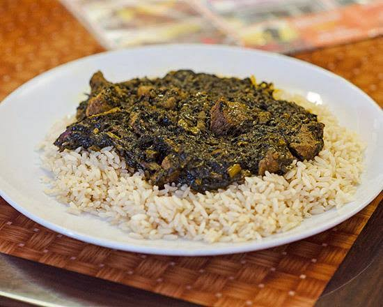

Cassava Leaf

Decription
This is an indegineous dish from west africa easy to prepare
Ingredients
- Ground cassava leaves
- Peanut butter
- Okra
- Pepper and onions
- Seasonings
- Palm oil
- Meat/fish/chicken
Steps
- Cook the cassava leaves for about 20 minutes on medium heat
- Add 3 spoons of peanut butter and let it boil for 10 minutes
- Blend the oinions and pepper and add it
- Grind the okra and add it
- Meaure a cup of oil/palmoil and add to it
- Add meat/fish/chicken if you use any